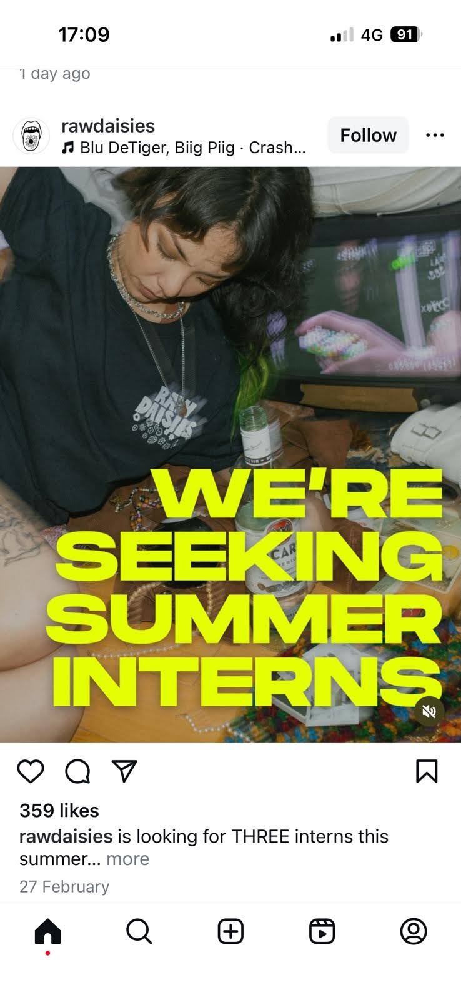

Focus here first
The strongest fits. Best place to spend attention.
Worth reviewingMaybe / keep alive
Relevant opportunities that need judgment, not instant dismissal.
Low priorityWatch, don’t chase
Interesting institutions or roles that are not the right fit right now.
Expired / constrainedReference only
Good examples, weak timing, or practical blockers.
High interest

2x4
High-interestActive / time-sensitive
Roles: Branding / Environments / Strategy Internships
Company: Multidisciplinary design studio with distinct Branding, Environments, and Strategy teams.
Why Maia may care: paid, in-person, 12-week studio internships with strong relevance to design thinking and creative development.
Worth reviewing

Geoffrey Bawa Trust
Worth reviewingConstrained
Roles: Gallery Assistant / Graphic and Communications Designer
Company: Sri Lankan cultural institution focused on architecture, arts, ecology, exhibitions, and publications.
Why Maia may care: strong exhibition/cultural fit, but real feasibility issues because the roles are Colombo-based and require legal eligibility to work in Sri Lanka.

Latin Elephant
Worth reviewingMixed timing
Roles: Network Coordinator / Project Officer
Company: London charity focused on migrant communities, urban change, public engagement, and cultural activity.
Why Maia may care: relevant organisation, but the actual roles lean more community/policy than pure creative or exhibition work.
Low priority

Crafts Council
Low priorityLive roles
Roles: Director of Marketing, Communications & Audiences / Senior Community and Memberships Manager
Company: Major UK cultural institution focused on craft, learning, collections, and public programming.
Why Maia may care: great institution, wrong level and wrong role type for her right now.
Expired / constrained

Raw Daisies
Worth reviewingExpired
Roles: Marketing / Audio-Video / Merch Intern
Company: Independent creative production company working across film, theatre, events, fashion, and merch.
Why Maia may care: useful creative-media reference case discovered through Instagram, but likely weaker due to remote lean and expired timing.
How to use this
- Start with the overview.
- Open only the opportunities that seem worth attention.
- Separate fit from feasibility.
- Do not over-filter too early.
Legend
High-interest strong fit
Worth reviewing relevant but not top-tier
Low priority / expired / constrained useful context, not active focus